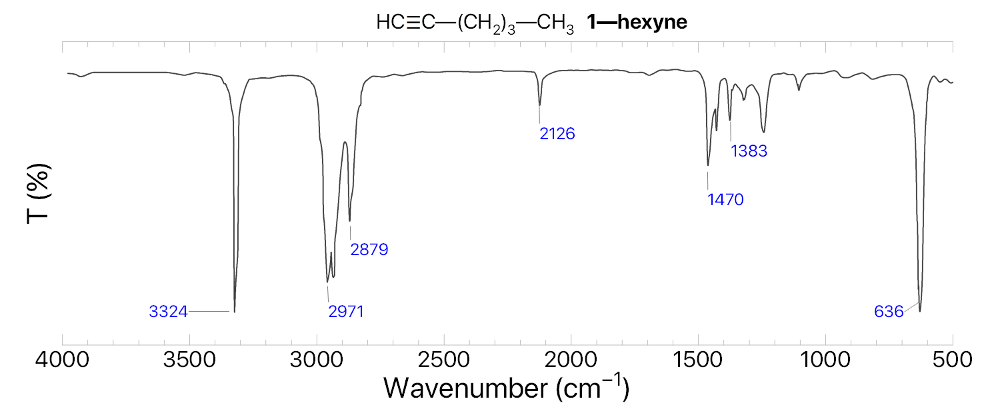

Инструкция и сокращения
Руководство

- Исследуемое соединение имеет полосы 3324, 2971, 2879, 2126, 1470, 1383, 636 см−1, введём их в строку поиска
- Ответ содержит: Тип колебания; структуру; класс соединения; диапазон волновых чисел (см−1), в котором возможно колебание интенсивность полосы
- Начинаем интерпретацию с полосы 3324 (в спектре имеет узкий и интенсивный пик — «s»).
Сначала нас интересуют строки, выделенные чёрным жирным шрифтом: #C—H stretch, dimer OH (в двух разных структурах),
NH stretch, ArO—H H-bonded.
Все варианты, кроме #C—H stretch, не подходят, поскольку соответствуют широким полосам или слабым, как в случае NH stretch - Подтверждаем выбранную структуру с помощью подпункта «Соотносится с:». Полоса
#C—H stretch может быть соотнесена с:
#C—H stretch 3330—3270 s уже подтверждена на предыдущем этапе, не подходит;
C#C stretch 2140—2100 m в спектре соединения есть полоса средней интенсивности — 2126, входящая в диапазон. Отнесение полосы подтверждено;
#C—H bend 700—600 s в спектре соединения есть полоса с высокой интенсивностью — 636, входящая в диапазон. Отнесение полосы подтверждено;
- Проверяем полосу 2971 (расщеплённый и интенсивный пик), колебания, связанные с dimer OH, не подходят, так как одно из условий — широкий пик (broad) — не выполнено, значит, по аналогии с предыдущими пунктами нам подходят валентные колебания CH stretch
Примечание: данный пункт для меня — спорный, так как эти два максимума можно трактовать как один широкий, однако найти исходный спектр в высоком качестве не получилось. Также в исходной инструкции авторы определяли класс соединения по его свойствам (запах, структура и др.), карбоновые кислоты не подходили под эти параметры.
- Проверяем полосу 2879 (узкий пик, менее интенсивный, чем 3324 — «s»), соотносится с:
CH2 and CH3 1450—1470 s. Полоса подтверждена, в спектре есть полоса высокой интенсивности — 1470 - Оставшиеся полосы подтверждены через соотнесения, расшифрованный спектр выглядит так:
Сокращения
Интенсивность полосы:
m — medium n — narrow s — strong w — weak vw — very weak broad — широкая/размытая полоса
misc. — miscellaneous (слабые, наложенные или нехарактерные полосы)
Положение заместителя:
monosubst (monosubstituted) — монозамещённый, один заместитель в ароматическом кольце, например толуол;
ortho-disub (ortho-disubstituted) — орто-дизамещённый, два заместителя в соседних положениях, 1,2-, например орто-ксилол (1,2-диметилбензол)
мета- и пара- оставляю без пояснения
1,2,3-trisub (1,2,3-trisubstituted) 1,2,3-тризамещённый, три заместителя в последовательных положениях ароматического кольца, например 1,2,3-триметилбензол
Типы колебаний


Источник: en.wikipedia.org/wiki/Infrared_spectroscopy.